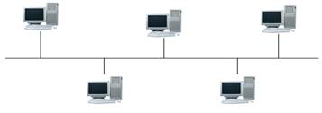
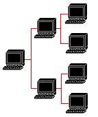
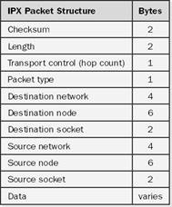

Contents
1.5. Komunikācijas protokolu standarta steki
2.Lokālo tīklu komponenti. Programmatūras izstrādes pamati lokālo tīklu
vidē.
2.1. Lokālo tīklu raksturojumi un galvenie standarti
2.2. Loģiskā topoloģija un lokālo tīklu arhitektūra
2.4.Tīklu
administrēšana un vadība
2.5.Datu pārraide lokālos tīklos
2.8. NetBIOS un NetBEUI protokols
2.9. IPX, SPX un NetBIOS saistības ar MS Windows
2.10. Klientservera programmēšanas modelis
1.Ievads tīklu tehnoloģijā
1.1.Galvēnas
definīcijas (tīkla lietojumprocess, datu galiekārta, kanāls, kopne, protokols,
trafiks, tīkla topoloģija, paziņojumu formāti, globālie un lokālie tīkli)
1.2.Tīklu
klasifikācija
1.3.Tīkla servisi
1.4.ASS (OSI) modelis.
1.5. Komunikācijas protokolu standarta steki
Datortīkli, pamatā, ir savstarpēji savienoti
datori tīkla struktūrā, kas ļauj tiem mijiedarboties vienam ar otru.
Datortīklus izmanto gan informācijas pārsūtīšanai no viena datora uz citu, gan
dažādu uzdevumu kopīgai risināšanai. Datortīkli arī atļauj perifērijas iekārtu
(piemēram, printeru) koplietošanu vairākiem lietotājiem.
Mūsdienās,
datortīkli ir mūsdienu komunikāciju galvenais elements. Arī Internets pamatā ir
milzīgs datortīkls. Pirms datortīklu rašanās, informāciju starp datoriem un
skaitļotājmašīnām pārnesa cilvēki, kas bija lēns un neērts veids. Tāpat
perifērijas ierīces varēja pieslēgt tikai kādam atsevišķam datoram, kas
apgrūtinaja to koplietošanu.
Datortīklu
rašanās, pamatā, ir loģisks datortehnikas attīstības rezultāts – bija
izveidojusies nepieciešamība pēc datu un citu resursu kopīgas izmantošanas.
Datortīklu izveidošanās vēstures pirmais posms bija pakešu apstrādes sistēmas,
kas radās apmēram 50. gados. Pakešu apstrādes sistēmas bija milzīgi to laiku
datori, kuri aizņēma pat veselas ēkas, un kuri bija paredzēti nelielam skaitam
lietotāju. Tie apstrādāja lietotāju veidotas perfokartes, kuras lietotāji
nodeva operatoriem. Skaitļošanas rezultātus varēja saņemt nākamajā dienā. Šāds
datu apstrādes veids bija neērts lietotājiem, taču tas bija efektīvākais tā
laika datoru veikstspējas izmantošanas režīms.
Nākamais
posms datortīklu attīstības posms bija interaktīvās daudzterminālu laikdales
sistēmas, kas parādījās, jo procesori kļuva lētāki. Šādā sistēmā datoru
uzreiz izmantoja vairāki lietotāji. Katram lietotājam bija terminālis, caur
kuru tas komunicēja ar datoru. Šāda veida datortīkli kļuva populāri, un
terminālus sāka izviedot lielā attālumā no centrālā datora. Termināli
pieslēdzās datoram, izmantojot telefona sakaru līnijas.
Ap
70. gadiem parādījās jaunas tehnoloģijas datoru ražošanā, kas atļāva ražot
minidatorus. Šie datori kļuva par lieliem lieldatoru konkurentiem savu
funkcionālo iespēju dēļ. Šo datoru cena strauji samazinājās, tie kļuva pieejami
plašākām cilvēku masām. Parādījās jauns
datortīklu veids – lokālie tīkli, kas radās datu apmaiņas nepieciešamības
rezultātā. Šie pirmie lokālie tīkli atšķīrās no mūsdienu lokālajiem tīkliem,
galvenokārt ar savienojuma veidiem. Tika izmantotas dažādas iekārtas, ar
dažādiem kabeļu un savienojumu tipiem un varēja savienot tikai datorus, kuriem
tās bija paredzētas.
80.
gados tika izstrādāti savienojumu standarti, kas atļāva savienot dažādu
ražotāju datorus, kā, piemēram, Ethernet, Token Ring, Arcnet. Standarti tika
izstrādāti, galvenokārt, personāldatoru parādīšanās un lokālo tīklu
popularitātes dēļ.
1.1.Galvēnas definīcijas
Definēt terminu „datortīkls” var sekojoši – datortīkls
ir savstarpēji savienoti datori un iekārtas, kas spēj koplietot resursus un
apmainīties ar informāciju savā starpā. Datortīklus veido aparatūra un
programmatūra. Datortīkli ir ļoti noderīgi un nepieciešami, ja kāda darba
izstrādē nepieciešams vairāku cilvēku vienlaicīgs darbs, kā piemēram datu bāzu
izmantošana un modificēšana, piekļuve vienam un tam pašam failam, utt.
Visvienkāršākais datortīkla piemērs ir 2 datori, kas savienoti ar kabeli.
Datori tīklā var būt savienoti arī ar bezvadu tehnoloģijām.
Tīkla lietojumprocess
Tīkla lietojumprocesi, jeb tīkla dienesti, ir procesi,
kas darbojas resursdatoros un nodrošina datu apmaiņu starp tīklā savienotajām
iekārtām. Daži lietojumprocesu piemēri ir datu bāzes, e-pasts, informācijas
meklēšanas servisi, apmācības sistēmas u.c. Šie procesi nodrošina tūlītēju
informācijas atjaunošanu datortīklā, kas atvieglo lietotāju darbu, jo vienmēr
ir pieejama jaunākā informācija.
Tīkla resurss
Tīkla resursi, parasti, ir dažādas perifērijas
iekārtas, kas pieslēgtas datoram, piemēram, printeris, modems, CD-ROM u.c.
Daudzi tīkla pakalpojumi ir balstīti uz šo resursu izmantošanu. Piemēram,
e-pasta serveris, kas piedāvā diska vietu un sakaru servisu, drukas serveris,
kas piedāvā printera pakalpojumus, dažādi failu serveri, kas arī piedāvā diska
vietu. Parasti datorus, kas piedāvā šos resursus, sauc par serveriem, bet
datorus, kas izmanto resursus – par klientiem.
Datu galiekārta (Data terminal equipment) ir iekārta,
kas lietotāju ievadinformāciju pārkonvertē tīkla signālos, vai konvertē tīkla
signālus atpakaļ lietotāja informācijā. Šis ir vispārināts termins, kas apzīmē
gala lietotāja iekārtu vai tās daļu. Vienkāršākais datu galiekārtas piemērs ir
personālais dators, kas var vienlaicīgi būt gan informācijas avots, gan
saņēmējs. Sekojoši, datu galiekārta var būt jebkura ierīce, kas spējīga saņemt
vai nosūtīt datus, piemēram, GPS uztvērēji, termināli, kases aparāti u.c.
Kanāli savieno datu galiekārtas. Datortīklos
vienkāršākais kanāla piemērs ir vads kas savieno datu galiekārtas (datorus,
perifērijas ierīces). Pa kanāliem tiek raidīta informācija starp šīm iekārtām.
Izšķir vairāku veidu kanālus.
Kopne ir subsistēma, caur kuru tiek pārraidīti dati.
Datortīklos, kas izmanto kopnes topoloģiju, dati starp datoriem tiek pārraidīti
ar elektriskajiem signāliem izmantojot kabeli, jeb kopni. Kopnes topoloģija ir
vienkāršākais datortīklu datu pārraides veids.
Datoru tīkla protokoli ir digitālo komunikāciju
formāta apmaiņas noteikumu un procedūru kopu sistēma. Protokols apraksta šo
digitālo komunikāciju sintaksi, semantiku un sinhronizāciju. Protokoli var
iekļaut arī kļūdu atpazīšanas un labošanas iespēju, signālu un autorizācijas
iespējas. Ir vairāki datortīklu protokolu starptautiskie standarti, kas
atvieglo savietojamību starp iekārtām.
Datortīklu protokoli ir diezgan sarežģīti, ar plašām
uzstādījumu iespējām. Lai atvieglotu saprotamību, šie protokoli ir strukturēti
slāņos – vairāki savstarpēji sadarbojošies protokoli. Piemēram, TCP/IP
protokols, ko izmanto Interneta tīklā, sastāv no lietotnes, transporta,
Interneta un tīkla interfeisa slāņiem.
Trafiks nozīmē datu plūsmu datortīklā. Trafiks parasti
parāda tīkla noslodzi, un to izmanto tīkla statistikas savākšanai.
Tīkla topoloģija ir datortīkla datoru, aparatūras,
datorus savienojošo kabeļu un citu tīkla komponentu fiziskais izvietojums. To
var definēt arī kā grafa konfigurāciju, kurā, piemēram, datori ir virsotnes,
bet saites – savienojumi starp tiem. Ir vairāki topoloģiju veidi, katram ir
savas priekšrocības un trūkumi, kas ietekmē tā izvēli. No topoloģijas izvēles
ir atkarīga arī tīkla paratūras izvēle, tīkla vadīšanas un paplašināšanas
iespējas un metodes. Plašāk izmantotās (bāzes) topoloģijas ir gredzena (apļa),
maģistrāles un zvaigznes.
Datortīkli lai sazinātos nosūta un saņem paziņojumus
ar protokolu palīdzību. Paziņojumiem ir noteikts formāts, lai atvieglotu
savietojamību datortīklu ierīcēm. Atkarībā no izmantojamā protokola, paziņojumu
formāti ir dažādi. Protokolu ir daudz, arī paziņojumu formāti ir daudz.
Datortīklus dažkārt iedala pēc izmēra – datu
galiekārtu skaita, fiziskā savienojuma garuma, u.c. Parasti pēc šī iedalījuma
izšķir divus datortīklu veidus – globālo un lokālo tīklu.
Globālie tīkli (WAN) aptver plašas teritorijas, pat
vairāku tūkstošu kilometru apmērā. Šie tīkli izmanto sakaru līdzekļus, kas spēj
nodrošināt komunikāciju šādos attālumos, kā piemēram, telefonu līnijas. Tieši
tādēļ, agrāk šādos tīklos nebija iespējama liela ātruma datu pārraide, taču
mūsdienās, pateicoties jaunajām tīkla tehnoloģijām, arvien biežāk arī šajos
tīklos izmanto ātras sakaru līnijas, piemēram, optiskos kabeļus. Tādēļ,
mūdienās, šajos tīklos datu pārraides ātrums pārsniedz pat 150Mbit/s.
Lokālais tīkls (LAN) parasti ir izvietots relatīvi
mazā teritorijā, līdz 2 kilometriem. Parasti šie tīkli ir izvietoti vienā ēkā
vai iestādē, piemēram, uzņēmuma biroja tīkls. Tieši attāluma dēļ, šajos tīklos
parasti iespējams izmantot kvalitatīvākas datu pārraides kabeļu līnijas un
ātrums šajos tīklos parasti bija daudz lielāks nekā globālajos. Lokālie tīkli
var būt arī globālo tīklu sastāvdaļa.
Datortīklu priekšrocības
•
var
kopīgi izmantot dažādas iekārtas, ar kurām nav iespējams nokomplektēt visus
datorus lielās izmaksas dēļ;
•
ļauj
lietotājiem sadarboties citam ar citu un izveidot grupas, lai sasniegtu vairāk,
nekā var sasniegt atsevišķs lietotājs;
•
ļauj
tuvināt datu apstrādes līdzekļus datu avotiem un datu uztvērējiem un izveidot
dalītas datu apstrādes sistēmas;
ļauj palielināt dažādu sistēmu ātrdarbību un drošību.
1.2.Tīklu klasifikācija
Datortīklus var klasificēt pēc vairākiem kritērijiem.
Viebiežāk tos klasificē pēc teritoriālās pazīmes, topoloģijas un darbības
veida.
Pēc
teritoriālās pazīmes,
datortīklus iedala lokālajos tīklos (LAN – Local Area Network), pilsēttīklos
(MAN – Metropolitan Area Network) un globālajos tīklos (WAN – Wide Area
Network).
Lokālie
tīkli (LAN – Local Area Network) ir datortīkli kas izvietoti salīdzinoši nelielā
teritorijā, piemēram uzņēmuma ietvaros. Pirmo plaši lietoto lokālā tīkla
arhitektūru 1977. gadā izstrādāja firma Datapoint, un tas saucās ARCnet.
Lokālais tīkls ir datoru, printeru un citu,
savstarpēji savienotu, iekārtu tīkls. Parasti, lokālie tīkli ir izvietoti visai
nelielā teritorijā, apmēram, 1 – 2 km, vai ierobežoti ar vienu ēku vai iestādi.
Lokālais tīkls ir ātrdarbīgs un noturīgs pret bojājumiem. Tāpat lokālie tīkli
parasti ir zemākas izmaksas nekā pilsēttīkli vai globālie tīkli. Lokālajos
tīklos parasti datu pārraidei tiek izmantoti kabeļi, taču mūsdienās arvien
plašāk izmanto arī bezvadu tehnoloģijas (Wi-Fi). Vēl nesen lokālie tīkli bija
daudz ātrāki par globālajiem tīkliem, jo tie varēja izmantot dārgākus un
ātrākus savienojuma līdzekļus, turklāt jāsavieno bija relatīvi netālu esošas
iekārtas, taču mūsdienās arī globālo tīklu (Interneta) ātrums var mēroties ar
lokālo tīklu datu pārraides ātrumu. Lokālie tīkli var būt globālo tīklu
sastāvdaļa.
LAN tīklos visizplatītākā tīkla arhitektūra fiziskajam
un kanālu slāņiem ir Ethernet arhitektūra. TCP/IP protokols ir standarts
augstākajiem slāņiem.
Pilsēttīkli (MAN – Metropolitan Area Network) parasti
paredzēti lielāku pilsētu apkalpošanai. Pilsēttīkli ir lielāki par lokālajiem
tīkliem (LAN), bet mazāki par globālajiem tīkliem (WAN). Pilsēttīkli nav tik
izplatīts tīklu veids, kas parādījies salīdzinoši nesen. MAN tīkls parasti
savieno vairākus LAN tīklus, un tajā tiek lietoti augsta ātruma savienojuma
veidi, kā piemēram, optiskie vadi. MAN tīkls nodrošina arī savienojumu ar
globālo tīklu.
MAN tīkli parasti pieder kādām organizācijām, kas tos
apkalpo. Šos tīklus tāpat var izmantot arī kabeļtelevīzijas pārraides
nodrošināšanai.
Globālie
tīkli (WAN - Wide Area
Network) aizņem daudz lielāku teritoriju par lokālajiem un pilsēttīkliem,
piemēram, valsti vai kontinentu – teritorijas vairāku tūkstošu kilometru
apmērā. Šie tīkli apvieno cilvēkus, kas atrodas dažādās pilsētās vai valstīs,
un tos bieži izmanto biznesā, komunicējot ar darbiniekiem, partneriem, u.c.
Kvalitatīvas sakaru līnijas ir pārāk dārgas šāda
lieluma tīkliem, tādēļ globālajos tīklos bieži tiek izmantotas jau esošas
līnijas, kas paredzētas pavisam citiem mērķiem, bet spēj nodrošināt sakarus
šādos attālumos – piemēram, telefona vai telegrāfa līnijas, vai satelīta
kanālus. Globālajos tīklos parasti tiek izmantotas ATM un Frame Relay
tehnoloģijas.
Pēc
topoloģijas - biežāk
izmantojamās ir maģistrāles topoloģija, gredzena (riņķa) topoloģija un
zvaigznes topoloģija. Tās tiek sauktas par bāzes topoloģijām. Tapat eksistē arī
citas topoloģijas, piemēram, Point-to-Point topoloģija, koka topoloģija u.c.
Maģistrāles
topoloģija (Bus topology)
ir lētākā un ļoti vienkārša (1.1.att.). Tajā tiek izmantots kabelis, ko sauc
par maģistrāli. Visi datori, gan darba stacijas, gan serveris ir pieslēgti pie
šīs līnijas. Datori nosūta informāciju caur so kabeli elektronisko signālu
veidā. Dati tiek nosūtīti visiem datoriem, bet informāciju pieņem tikai dators,
kam adresēta šī informācija. Šādu topoloģiju agrāk izmantoja ļoti plaši, jo tā
bija vislētākā. Tāpat tā tika izmantota sākotnējās Ethernet versijās.

1.1.
att. Maģistrāles topoloģija
Maģistrāles topoloģijā, datori tikai klausās raidāmos
datus, bet nepiedalās to pārraidē. Tas nozīmē, ja dators izstājas no ierindas,
ta neietekmē kopnes darbību. Šajā topoloģijā tiek realizēta Half Duplex datu
apmaiņa, kas ļauj sūtīt informāciju abos virzienos, bet ne vienlaicīgi – pēc
kārtas. Tas ļauj novērst kolīzijas, kas rodas ja datori sūta datus viens otram
vienlaicīgi.
Maģistrāles topoloģijas priekšrocības :
- Lēta topoloģija, lēti kabeļi un spraudņi;
- Vienkārša uzstādīšana – datorus var jebkurā
brīdī pieslēgt tīklam un atslēgt no tā, netraucējot tīkla darbību;
- Datori ar datiem var apmainīties bez
servera starpniecības;
- Atsevišķa datora iziešana no ierindas
neietekmē tīkla darbību.
Maģistrāles topoloģijas trūkumi :
- Maģistrālā kabeļa bojājums ietekmē visu
tīklu;
- Grūti noteikt kabeļa bojājuma lokāciju;
- Kabeļa garums ir ierobežots;
- Pieslēdzamo datoru skaits ir ierobežots;
- Palielinot tīklam pieslēgto darbastaciju
skaitu, krītas tīkla veiktspēja;
- Viegla nesankcionēta pieslēgšanās.
Zvaigznes topoloģija (Star topology) ir mūsdienās visplašāk izmantotā
topoloģija datortīklos (1.2.att.). Zvaigznes topoloģijā datori tiek pieslēgti
centrālajam komponentam – koncentratoram (hub). Dati no pārraidošā datora, caur
koncentratoru, sasniedz pārējos datorus. Ja no ierindas izstāsies kāds no
datoriem, tas tīkla darbību neietekmēs, taču, ja no ierindas izstāsies
koncentrators, tas apstādinās visa tīkla darbu. Šajā topoloģijā atrast tīkla
bojājuma vietu ir daudz vieglāk nekā maģistrāles topoloģijā.
1.2.
att. Zvaigznes topoloģija
Izšķir 2 veida zvaigznes topoloģijas pēc tā, kas
atrodas zvaigznes centrā – aktīvā zvaigznes topoloģija un pasīvā zvaigznes
topoloģija. Aktīvajā zvaigznes topoloģijā centrā atrodas serveris (dators).
Pasīvajā slēgumā, centrā atrodas koncentrators (hub).
Zvaigznes topoloģijas priekšrocības :
- Kabeļa vai datora bojājuma gadījuma no ierindas
izstājas tikai bojātais dators, nevis viss tīkls;
- Viegli pieslēgt jaunu datoru, jo tas japieslēdz
tikai centrmezglam;
- Augsta tīkla veiktspēja;
- Viegla bojajuma vietas atrašana;
- Grūtāka nesankcionēta piekļuve, elastīgas
administrēšanas iespējas;
Zvaigznes topoloģijas trūkumi :
- Ja no ierindas izstājas centrmezgls, tas ietekmē
visu tīklu;
- nepieciešams vairāk vadu, nekā citām topoloģijām;
- Pieslēdzamo datoru skaits ir ierobežots –
atkarīgs no portu skaita centrmezglā;
- Tīkla ātrdarbība atkarīga no centrmezgla
ātrdarbības.
Gredzena
topoloģijā (Ring
topology) katra no ierīcēm ir savienota ar divām blakus esošajām, tādējādi
veidojot gredzenu (1.3.att.). Dati tiek sūtīti no viena datora uz otru, tādēļ
datu pārraidei starp datoriem tiek izmantoti marķieri, kas nosaka raidītāju un
saņēmēju datorus.
1.3.
att. Gredzena topoloģija
Šajā topoloģijā datori tiek saslēgti gredzenveidīgi –
pie kabeļa, kas saslēgts gredzenā. Atšķirībā no kopnes topoloģijas, datori šajā
tīklā saņem datus un pārraida tos tālāk, darbojoties kā signāla pastiprinātāji,
kas nozīmē, ja kāds dators izies no ierindas, viss tīkls pārstās funkcionēt.
Šajā tīklā bieži izmanto marķiera (token) nodošanu.
Marķieris tiek pārvietots pa šo gredzenu, kamēr kāds dators nevēlas pārraidīt
datus, un pārtver marķieri. Pēc tam, pievieno tam datus un pārvieto tālāk,
nākamajam datoram. Marķieris iet pa gredzenu kamēr nesasniedz mērķa datoru, kam
jānodod dati.
Gredzena topoloģijas priekšrocības :
- Tīkla uzstādīšana ir relatīvi viegla;
- Nav nepieciešamas speciālas papildus
iekārtas;
- Praktiski nav ierobezots saslēdzamo
datoru daudzums;
- Stabila tīkla darbība, nav kolīzijas;
- Gredzena topoloģijas trūkumi :
- Ja no ierindas iziet viena ierīce, visa
tīkla darbība tiek apstādināta;
- Lai pievienotu jaunu ierīci, tīkla
darbība uz laiku ir jāapstādina;
- Bojājumu meklēšana ir apgrūtināta;
- Sarežģīta konfigurēšana.
Koka
topoloģijā (Tree
topology) centrālā saknes (augstākā līmeņa) darbastacija, ar point-to-point
savienojumu, savienota ar vienu vai vairākām citām (zemāka līmeņa)
darbastacijām, kuras, savukārt, var būt savienotas ar vēl zemāka līmeņa
darbastacijām, utt. (1.4.att.). Koka topoloģija ir hierarhiska topoloģija. To
parasti lieto lielos tīklos. Koka topoloģija ir zvaigznes un maģistrāles
topoloģiju apvienojums.

1.4.
att. Koka topoloģija
Koka topoloģijas priekšrocības :
- Point-to-Point savienojums starp
individuālām darbastacijām;
- Atsevišķa datorā iziešana no ierindas
neietekmē visu tīklu;
Koka topoloģijas trūkumi :
- Sarežģīta konfigurācija un uzstādīšana;
- Ja no ierindas iziet saknes darbastacija,
tas aptur visa segmenta darbību.
Bieži tiek lietotas jaukta tipa topoloģijas (Hybrid topologies), kurās tiek
apvienotas dažādas topoloģijas, lai novērstu kādas topoloģijas trūkumu, un
sasniegtu nepieciešamo konfigurāciju. Biežāk izmantojamās jauktās topoloģijas
ir zvaigznes-gredzena topoloģija un zvaigznes-maģistrāles topoloģija.
Pēc tīklu
darbības veida iedala klients-serveris (client-server) tīklus un
vienādranga (peer-to-peer) tīklus.
Klients-serveris (client-server) tīklu veido, izmantojot
centrālo serveri vai serverus, kuriem pieslēdzas klienti (1.5.att.). Uz šo
darbības veidu balstās vairums Interneta protokolu. Klients-serveris tīklos
salīdzinoši viegli nodrošināt lietotāju autentifikāciju. Klients-serveris
arhitektūru izmanto daudz klasisko interneta protokolu, ka piemēram, FTP, HTTP,
IRC, SMTP. Šāda tīkla arhitektūras topoloģija atgādina zvaigznes topoloģiju.
att.
1.5. klients-serveris arhitektūra
Šādas arhitektūras tīkla centrā atrodas viens vai
vairāki jaudīgi datori, kas pilda servera funkcijas. Serveris ir savienots ar
pārējām darbastacijām – klientiem. Izdalītie serveri ir serveri, kuriem parasti
ir vairāk par 10 klientiem. Šādi serveri ir jaudīgāki pateicoties tam, ka tie
ir specializēti, tie nodrošina ātrāku datu pārraidi, lielāku drošību un
stabilitāti. Tomēr, ja ļoti strauji palielinās lietotāju skaits, slodzes dēļ
šādi tīkli zaudē efektivitāti.
Šādam tīklam ir nepieciešams administrators –
speciālists, kas uzrauga tīkla darbību, veic profilaktiku, u.c. Tāpat šo tīklu
vadību, atsevišķu ierīču vadību veic ar speciālām programmatūrām. Šie faktori
palielina tīkla izmaksas.
Klients-serveris tīkla priekšrocības :
- Dati glabājas serverī, kas parasti ir
vairāk aizsargāts par klientu datoriem, tādēļ nodrošina lielāku datu
aizsardzību;
- Ļauj izmantot servera resursus klientiem
ar dažādiem datoriem, platformām un operētājsistēmām;
- Ļauj sadalīt skaitļošanas funkcijas starp
vairakiem tīkla datoriem.
Klients-serveris tīkla trūkumi :
- Tīkls tiek paralizēts, ja no ierindas
izstāja serveris;
- Augstas aparatūras izmaksas;
- Tīkla efektivitāte atkarīga no klientu
skaita.
Vienādranga
tīklos (peer-to-peer)
datori sazinās savā starpā tieši, neizmantojot centrālo serveri (1.6.att.).
Šādā tīklā dators var būt gan serveris, gan klients, vai pat apvienot šīs
funkcijas. Katrs dators piedāvā resursus, kā piemēram, vietu datu glabāšanai,
datu apstrādi un pārraidi, kā arī katrs klients var izvēlēties, kādus sava
datora resursus nodot koplietošanai, piešķirt piekļuvi un tiesības lietotājiem.
Vienādranga tīklu arhitektūra atgādina maģistrāles topoloģiju.
1.6. att. Vienādranga arhitektūra
Šāda tipa
tīklu arhitektūra ir populāra dažādās failu koplietošanas programmās, kā,
piemēram, DC++ un BitTorrent, kurās katra lietotāja dators tiek izmantots gan
kā serveris, gan kā klients.
Vienādranga
tīklu priekšrocības :
• Sistēmas kapacitāte palielinās, ja
pievienojas lietotāji;
• Lētums;
• Vienkārša vadība.
Vienādranga
tīklu trūkumi :
• Grūtāk nodrošināt drošību.
1.3.Tīkla servisi
Tīkla servisi ir programmas, kas nodrošina datortīklu
darbību, uzlabo ātrumu un darbības nepārtrauktību, kā arī uzlabo tīkla
lietošanas ērtumu, un nodrošina dažādu servisu, failu, pakalpojumu
koplietošanu. Pazīstamākie un izplatītākie tīkla servisi ir e-pasta serviss,
FTP, HTTP, DHCP un DNS serviss, kā arī daudzi citi. Parasti tīkla servisi ir
uzinstalēti uz servera, un ir pieejami lietotājiem pa tīklu. Dažu tīkla servisu
piemēri :
- Dažādi sakaru servisi, kas nodrošina
saziņu ar citiem datoriem tīklā vai ārpus šī tīkla. Piemēram, e-pasta
servisi, kā POP3 vai IMAP servisi, kas nodrošina e-pasta saņemšanu uz
klienta datora un atvieglo darbu ar epastu, jo nav nepieciešams manuāli
atjaunot e-pastu. E-pasta servisi nodrošina datu nosūtīšanu adresātam,
ienākošo datu veiksmīgu saņemšanu, kontaktu veidošanu.
- Failu glabāšanas un pārsūtīšanas servisi,
kas nodrošina pieeju koplietošanas failiem un programmām. Parasti faili
glabājas uz viena no tīkla datoriem, kuram, izmantojot tīkla protokolus,
var piekļūt citi, klientu datori. Vienādranga tīklos, dati glabājas klietu
datoros, un tiem var piekļūt citi klientu datori. Viens no šādiem tīkla
servisiem ir FTP - failu pārsūtīšanas serviss, ko izmanto datu un failu
pārsūtīšanai no viena datora uz citu, datu glabāšanai vai apskatei uz cita
datora.
- Drukas servisi, kas nodrošina printeru
koplietošanu. Drukas serverim parasti ir pieslēgti vairāki printeri, un
serveris pieņem klientu drukas pieprasījumus un nosūta tos uz pieejamo
printeri, vai atstāj rindā, līdz kāds printeris atbrīvojas. Drukas serveri
var izmantot vairākus protokolus, kā piemēram, Internet Printing Protocol,
Microsoft Network Printing protokolu u.c.
Ir, protams, arī daudz dažādi citi tīkla servisi, kas nodrošina
pakalpojumus:
- DHCP
serviss, kas nodrošina automātisku IP adreses saņemšanu un tīkla
konfigurāciju uz klienta datora. Bez šī servisa, IP adreses konfigurācija
būtu jāveic manuāli, katru reizi pieslēdzoties tīklam, ja adrese ir
dinamiska (mainīga), kas ir diezgan apgrūtinoši.
- HTTP
serviss, kas nodrošina web lappušu attēlošanu interneta pārlukos.
- DNS serviss
sasaista simbolu virknes identifikatorus ar tīkla adresēm, lai
lietotājiem nebūtu jāatceras no galvas tīkla adreses, tā vietā ievadot
simbolu identifikatoru, jeb lapas nosaukumu.
- Dažādi
autentifikācijas un šifrēšanas servisi, kas nodrošina drošu datu
pārraidi, kā piemēram SSL.
1.4.ASS (OSI) modelis
ASS (OSI – Open Systems Interconnection) modelis, jeb
Atvērto Sistēmu Sadarbības etalonmodelis, ir abstrakts tīkla un komunikāciju
protokolu dizaina modelis, ko 1984. gadā izstrādāja Starptautiskā Standartu
organizācija. Tas tika izstrādāts, jo bija nepieciešams vienots tīkla modelis,
kas atļautu sadarboties dažādu ražotāju aparatūrai un atvieglotu aparatūras
savietojamību.
Šis modelis ir strukturēts slāņos – funkciju un
instrukciju kopumos, kas padara to vieglāk uztveramu un izpildāmu. Kopā modelis
ir sadalīts 7 slāņos, kas katrs ir relatīvi neatkarīgs. Katra slāņa darbība ir
aprakstīta ar protokoliem – likumiem. Lai sekmīgi mijiedarbotos atvērtas
sistēmas, nepieciešams, lai atbilstošajiem slāņiem būtu vienādi protokoli. Datu
pārraide notiek starp blakus esošiem protokoliem, tāpēc datu pārraidei sistēmā
jārealizē protokolu steks.
Lielākajā daļā tīklu iekārtu realizē visus septiņus
modeļa slāņus. Tomēr dažās tīkla realizācijās viens vai vairāki slāņi var būt
apvienoti, piemēram, TCP/IP protokolu stekā.
Pirmie trīs slāņi – fizikālais, kanāla un tīkla - ir
vides slāņi. Pārējie četri – transporta, sesijas, pasniegšanas un lietojuma –
ir iekārtas slāņi. Divi zemākie OSI modeļa slāņi parasti tiek realizēti ar
aparatūras un programmatūras palīdzību, bet pārējie pieci augstākie slāņi
parasti tiek realizēti tikai ar programmatūru (1.9.att.).

1.9. att.
ASS modelis
ASS modelis ātri kļuva par etalonmodeli tīkla
komunikācijām un ziņojumu pārraidei.
Septiņi ASS modeļa slāņi ir :
·
lietojuma : šajā slānī notiek komunikācija ar programmām, kas
izmanto tīkla servisus vai funkcijas. Šis ir augšējais slānis, kas neapkalpo
nevienu citu slāni, kā arī, vistuvākais lietotājam slānis. Tomēr, ASS modelis
paredz komunikāciju tikai ar programmām, nevis ar lietotāju.
Šajā slānī informācijas mērvienība ir dati.
Lietojumslānī darbojas protokoli FTP, SMTP, HTTP, DNS un citi
·
pasniegšanas : šis slānis atbild par datu attēlojuma funkcijām.
Tas nozīmē, ka šis slānis veic informācijas formatēšanu un translēšanu, lai to
varētu izlasīt konkrētās sistēmas lietojuma slānis.
Šajā slānī informācijas mērvienība ir dati.
Pasniegšanas slānī darbojas protokoli SSL, MIME, XDR un TLS.
·
sesijas : slānis atbild par sesiju starp lokālo un attālināto
lietojumu izveidošanu, pārtraukšanu un uzturēšanu.
Šajā slānī informācijas mērvienība ir dati.
Sesijas slānī darbojas protokoli SOCKS, NetBIOS un citi.
·
transporta : nodrošina sesijas slāņa datu drošu nosūtīšanu
adresātam, bez kļūdām. Šis slānis sadala datus segmentos un var atklāt un
novērst kļūdas.
Šajā slānī informācijas mērvienība ir segments.
Transporta slānī darbojas protokoli TCP, UDP, SPX un citi.
·
tīkla : nodrošina savienojumu starp tīkla iekārtām un
maršruta izvēli, savienojuma veikšanai. Tas nodrošina arī fragmentēšanas un
defragmentēšanas iespējas. Tīkla slānī strādā trīs protokolu veidi – tīklu
protokoli, maršrutizācijas protokoli un adrešu atrisināšanas protokoli.
Šajā slānī informācijas mērvienība ir pakete, diagramma.
Tīkla slānī darbojas protokoli IP, ICMP un citi.
·
kanāla : nodrošina datu pārraidi caur fizisko kanalu. Dažos
gadījumos var arī atklāt un risināt kļūdas. Šajā slānī tiek izmantotas MAC
adreses.
Šajā slānī informācijas mērvienība ir kadrs.
Kanāla slānī darbojas protokoli ARP, Frame Relay, ATM un citi.
·
fizikālais : fizikālais slānis definē fizikalos parametrus tīkla
iekārtām, kā piemēram, kabeļu, sprieguma, kontaktu specifikācijas, utt.
Fizikālā slāņa pamata funkcijas ir sakaru nodibināšana un pārtraukšana ar
sakaru ierīci un modulācija, jeb datu signālu konversija.
Šajā slānī informācijas mērvienība ir bits.
Fizikālajā slānī darbojas protokoli USB, Bluetooth, DSL un citi.
ISO/OSI modelis
Tīkla sadarbības līdzekļu daudz slāņu
attēlošanai ir sava specifika, kas ir saistīta ar to, ka ziņojumu apmaiņas
procesā piedalās divi datori un vajag saskaņot kā sadarbību starp tiem, tā arī
sadarbību starp hierarhijas līmeņiem viena datora ietvaros. Šiem nolūkiem
izmanto formalizēto semantisko un sintaksisko noteikumu kopu, kas nosaka datoru
apstrādes sistēmas vai datoru tīkla funkcionālo bloku darbību datu apmaiņas
procesā un ko sauc par protokolu.
Moduli, kas realizē blakus līmeņu protokolus
un atrodas vienā mezglā (datorā) arī sadarbojas sev starpā pēc stingriem
noteikumiem un ar standartizēto ziņojumu formātu ko sauc par interfeisu.
Interfeiss nosaka pakalpojumus, ko līmenis sniedz blakus līmenim.
Hierarhiski organizētu protokolu kopu, kas ir
pietiekama mezglu sadarbības organizēšanai tīklā, sauc par komunikācijas
protokolu steku.
20. Gadsimta 80.gados tika izstrādāts atvērto
sistēmu sadarbības modelis OSI, kas nosaka septiņus sadarbības slāņus –
lietojuma, pasniegšanas, seansa, transporta, tīkla, datu posma, fizikālo, - kas
izpilda noteiktas funkcijas: apkalpo nākamo augstāko slāņi un izmanto zemāka
slāņa pakalpojumus.
Atvērto sistēmu sadarbības bāzes etalonmodelis
(OSI model):

Fizikālais slānis ir etalonmodeļa zemākais (pirmais) slānis, kas
nodrošina mehāniskos, elektriskos, funkcionālos un procedūras līdzekļus, lai
nodibinātu, uzturētu un pārtrauktu fizikālos savienojumus datu pārraides vidē.
Šis slānis nodrošina bitu pārraidi; no datora puses šī līmeņa funkcijas izpilda
tīkla adapteris vai secīgais ports. Par fizikāla slāņa protokola piemēru var
minēt Ethernet tehnoloģijas specifikāciju 10Base-T.
Datu posma slānis sniedz pakalpojumus tīkla slāņa entītijām un realizē
funkcijas, kas ir saistītas ar kadra formēšanu un pārraides vadību, kā arī tās
gaitā radušas kļūdu atklāšanu un labošanu. Lokālos tīklos šī slāņa protokolus
izmanto datori (tīkla adapteri un draiveri), tilti, komutatori, maršrutētāji.
Globālos tīklos šis slānis nodrošina ziņojumu apmaiņu starp diviem
blakusesošiem datoriem, kas ir savienoti ar sakaru līniju.
Tīkla slānis nodrošina pakalpojumus datu apmaiņas realizēšanai
starp transporta slāņa entītijām un veic pakešu formēšanu, kā arī to
maršrutēšanu datu pārraides tīklā. Kā piemēru var minēt steka TCP/IP starp
tīklu sadarbības protokolu IP un steka Novell starp tīklu pakešu apmaiņas
protokolu IPX.
Transporta slānis nodrošina drošu un no kodēšanas neatkarīgu datu
apmaiņu starp seansa slāņa entītijām, izmantojot tīkla slāņa servisu. Sākot no
šī slāņa visi protokoli tiek realizēti ar tīkla gala mezglu programmatūru, t.i.
ar viņu tīkla OS komponentiem. Par piemēriem var minēt steka TCP/IP protokolus
TCP un UDP un steka Novell protokolu SPX.
Seansa slānis nodrošina divu lietotāju dialoga organizēšanu un
sinhronizēšanu, kā arī datu apmaiņas vadību starp šiem lietotājiem. Praksē šo
slāni reti realizē atsevišķu protokolu veidā; šī slāņa funkcijas apvieno ar
lietojumslāņa funkcijām un realizē vienā protokolā.
Pasniegšanas slānis ir sestais etalonmodeļa slānis, kas,
izmantojot seansa slāņa servisu, nodrošina kopējas sintakses izvēli datu
aprakstīšanai, kā arī veic kodu pārveidošanu un datu struktūru attēlošanu datu
apmaiņas procesā starp lietojumslāņa entītijām. Piem., steka TCP/IP protokols
SSL.
Lietojumslānis, izmantojot pasniegšanas slāņa servisu, sniedz
pakalpojumus lietotāju programmām, nodrošina lietojumprocesu mijiedarbību.
Piem., failu dienesti NFS, FTP, TFTP no TCP/IP steka, NCP (Novell NetWare), SMB
(Windows NT).
1.5. Komunikācijas protokolu standarta steki
Modularitāte un standartizācija
Viena no datortīklu pamatīpašībām ir to
modularitāte. Tā izpaužas ne tikai kā
vairākslāņu priekšstats par protokoliem, bet arī kā tīklu arhitektūras īpašība.
Šī arhitektūra noteic tīkla moduļa veida uzbūvi, iekārtu (datori, adapteri,
modemi, tilti, maršrutētāji), lietojuma moduļu un protokolu savietojamību.
Savietojamība tiek nodrošināta ar atbilstošu
specifikāciju un standartu palīdzību.
[Specifikācija – detalizēts ierīces, procesa vai
izstrādājuma nepieciešamo raksturojumu precīzs apraksts]
[Standarts – oficiāls dokuments, kas noteic prasības
attiecībā pret dažāda veida objektiem un tehnoloģiskiem procesiem. Datu
apstrādes un pārraides sistēmās ar šo terminu parasti saprot Starptautiskās
standartizācijas organizācijas (ISO) vai Starptautiskās telefonijas un
telegrāfijas apvienības konsultatīvās komitejas (ITU-T) rekomendācijas. Ar
standartu izstrādi nodarbojas arī ANSI, EIA, ECMA, IEEE, NBS]
Par protokolu steku sauc tādu protokolu saimi, kur
tajā ietilpstošie protokoli atbilst atvērto sistēmu sadarbības etalonmodelim un
tā funkcijām, perfekti saskaņoti viens ar otru, bet var atšķirties no citiem
stekiem ar to realizācijas mehānismiem.
Pašlaik datortīklos lieto vairākus komunikācijas
protokolu stekus. Populārākie no tiem ir: TCP/IP, IPX/SPX (Novel Netware),
NetBIOS/SMB, DECnet, SNA, OSI.
Visos šajos stekos, izņemot SNA, zemākajos slāņos –
fizikālā un kanāla – var lietot vienus un tos pašus precīzi standartizētus
protokolus – Ethernet, Token Ring, FDDI, bet globālajos tīklos X.25, ISDN un
citus, kas ļauj izmantot vienu un to pašu pārraides vidi un aparatūru. Steku
augstākajos slāņos parasti tiek lietoti atšķirīgi protokoli, kas spēj
savstarpēji sadarboties starp dažādiem stekiem pateicoties precīzai standartu
ievērošanai zemākajos slāņos. Aplūkosim īsi katru no šiem stekiem atsevišķi.
OSI steks
Svarīgi apzināt OSI protokolu steka atšķirību no OSI
etalonmodeļa. Jāievēro, ka OSI etalonmodelis ir konceptuāla shēma, kuru lieto
dažādu protokolu un steku salīdzināšanai. Turpretim OSI protokolu steks ir
savstarpēji saskaņotu protokolu komplekss, kas visprecīzāk atbilst OSI
etalonmodelim.
Zemākajos slāņos šis steks uztur vienus un tos pašus
precīzi standartizētus protokolus – Ethernet, Token Ring, FDDI, bet globālajos
tīklos X.25, ISDN u.c.
Tīkla, transporta un seansa slāņu šī steka protokolus
ir specificējuši un realizējuši dažādi ražotāji, bet tie pagaidām ir maz
izplatīti.
Populārākie ir šī steka augstāko slāņu protokoli:
failu pārraides protokols FTAM, virtuālā termināla emulācijas protokols VTP,
uzziņu dienesta protokols X.500, e-pasta protokols X.400 u.c. No citiem protokolu stekiem tas atšķiras ar savu
universālumu, bet kā nodeva tam ir arī tā paaugstinātā sarežģītība. OSI
protokolu steks orientēts galvenokārt lietošanai uz jaudīgiem datoriem. Darbs
pie tā pilnveidošanas vēl arvien turpinās.
TCP/IP steks
Darbu pie šī steka izstrādes jau vairāk kā pirms 20
gadiem uzsāka ASV aizsardzības ministrija un tas bija paredzēts, lai sasaistītu
eksperimentālo tīklu ARPAnet ar citiem tīkliem. Lielu ieguldījumi šī steka
attīstībā ir veikusi Berklijas universitāte realizējot steka protokolus OS UNIX
versijā. Šīs sistēmas popularitāte arī ievērojami veicināja steka izplatību.
Steka zemākajos slāņos – fizikālā un kanāla -
pieļaujams lietot visus populāros standarta protokolus – lokālajos tīklos:
Ethernet, Token Ring, FDDI, bet globālajos tīklos protokolus, kas darbojas
analogos komutējamos sakaru kanālos un īpaškanālos: SLIP, PPP, X.25, ISDN u.c.
Steka pamat protokoli ir IP un TCP, kas pēc OSI
terminoloģijas atbilst attiecīgi tīkla un transporta slāņiem. IP nodrošina
paketes virzību tīklā, bet TCP garantē tās nogādes drošību.
Ilgstošas un daudzpusīgas lietošanas rezultātā dažādās
valstīs un organizācijās steka lietojumu slānī ir iekļauts liels skaits
populāru lietojumu protokolu, piemēram, failu pārraides protokols FTP, termināla telnet emulācijas
protokols, e-pasta protokols SMTP,
hiperteksta pakalpojumu protokols www u.c.
Pašlaik šo steku lieto sakariem vispasaules tīklā
Internet kā arī lielā daļā korporatīvo tīklu. Internets apvieno ap 107 datoru
visā pasaulē un tādēļ TCP/IP steks sāk dominēt pār iepriekšējo gadu līderi –
Novell steku IPX/SPX. TCP/IP steku lieto arī tīklos, kas nav iekļauti Internetā
un kurus sauc par IP-tīkliem.
Pie īpašībām, kas nodrošinājušas TCP/IP steka
līderpozīcijas, pieder:
·
tā
iespējas fragmentēt paketi, t.i., iespējas izvēlēties dažādus tās maksimālos
garumus, pārejot no viena tīkla fragmenta uz otru,
·
elastīgā
adresācijas sistēma, kas ļauj iekļaut intertīklā citu tehnoloģiju tīklus,
·
apraides
sūtījumu iespēju ekonomiskā izmantošana.
Protams, par šīm priekšrocībām ir jāmaksā un
šī maksa ir augstās prasības tīkla resursiem un sarežģītā IP-tīklu administrēšana,
kuru realizācija prasa lielākas skaitļošanas jaudas.
Elastīgā adresācijas sistēma un atteikšanās no
liekiem apraides sūtījumiem tiek panākta ievedot DNS, DHCP un citus
centralizētus dienestus, kuru uzdevums ir atvieglot tīklu administrēšanu, ieskaitot
iekārtu konfigurēšanu. Bet tas prasa lielu uzmanību arī no administratoriem.
Steks IPX/SPX
Tas ir firmas Novell izstrādātais protokolu steks
priekš OS NetWare. Steka pamat protokoli - Internetwork Packet Exchange (IPX)
un Sequenced Packet Exchange (SPX). Savu popularitāti steks ieguvis pateicoties
OS NetWare popularitātei. Tā vēl arvien ir viena no visvairāk uzstādītajām
sistēmām, lai gan pēc izplatības tempiem pašlaik atpaliek no Windows NT.
Vairākas šī steka īpašības ir orientētas uz lietošanu
tādos neliela izmēra lokālos tīklos, kur datoriem ir nelieli darba resursi.
Tādēļ tas pieļauj minimālas prasība datoru operatīvai atmiņai (līdz 640 KB). Šī
steka protokoli līdz nesenam laikam labi darbojās lokālos tīklos, bet sliktāk –
lielākos tīklos, jo pārslogoja tos ar lielu apraides trafiku. Steka izplatību
ierobežoja arī tas, ka tā realizācijām bija nepieciešama licenzēšana.
Pēdējā laikā, sākot no NetWare 4.0 firma Novell ir
veikusi stekā nopietnas izmaiņas ar nolūku adaptēt to lietošanai lielos tīklos.
Tagad steks IPX/SPX tiek realizēts arī citās populārās OS, piem., SCO UNIX, Sun
Solaris, Windows NT u.c.
Steks NetBIOS/SMB
To plaši lieto kompāniju IBM un Microsoft produktos.
Zemākajos slāņos lieto tos pašus protokolus, ko iepriekš aplūkotos stekos.
Augstākajos slāņos darbojas protokoli NetBEUI un SMB.
Protokols NetBIOS (Network Basic Input/Output System) parādījās 1984. gadā kā
tīkla paplašinājums IBM PC datoriem. Vēlāk to aizstāja ar paplašinātā lietotāja
interfeisa (saskarnes) protokolu NetBEUI – NetBIOS Extended User Interface. Šis
protokols orientēts uz tīkliem, kuru darbstaciju skaits mazāks par 200 un
paredzēts ekonomiskai skaitļošanas resursu izmantošanai. Viens no tā trūkumiem
– tajā nav paredzēta maršrutizācija. Tādēļ to var lietot lokālos tīklos, kuros
nav apakštīklu. Dažus NetBEUI ierobežojumus var likvidēt lietojot protokolu NBF
(NetBEUI Frame), kas ietverts arī OS Windows NT.

Protokols SMB (Server Message Block) pilda seansa,
priekšstata un lietojumu slāņu funkcijas. Ar tā palīdzību var strādāt failu
pārvaldes un izdrukas dienesti. Citi protokolu steki, piemēram, firmas IBM –
SNA, korporācijas Digital Equipment – DECnet, firma Aple – ApleTalk/AFT un citi
tiek lietoti attiecīgo firmu OS un tīkla iekārtās.
2.Lokālo
tīklu komponenti. Programmatūras
izstrādes pamati lokālo tīklu vidē.
2.1. Lokālo tīklu raksturojumi un galvenie standarti
Lokālais tīkls ir datoru,
printeru un citu, savstarpēji savienotu, iekārtu tīkls. Parasti, lokālie tīkli
ir izvietoti visai nelielā teritorijā, apmēram, 1 – 2 km, vai ierobežoti ar vienu
ēku vai iestādi. Lokālais tīkls ir ātrdarbīgs un noturīgs pret bojājumiem.
Tāpat lokālie tīkli parasti ir zemākas izmaksas nekā pilsēttīkli vai globālie
tīkli. Lokālajos tīklos parasti datu pārraidei tiek izmantoti kabeļi, taču
mūsdienās arvien plašāk izmanto arī bezvadu tehnoloģijas.
LAN tīklos visizplatītākā tīkla
arhitektūra fiziskajam un kanālu slāņiem ir Ethernet arhitektūra. TCP/IP
protokols ir standarts augstākajiem slāņiem.
Šobrīd pasaulē ir izveidoti
vairāku tipu lokālie tīkli, kuri pamatā atšķiras ar topoloģiju, izmēriem, darba
algoritmiem, arhitektūru un organizāciju. Tomēr, neatkarīgi no tīklu tipa, tiem
ir uzstādītas kopīgas prasības un raksturojumi:
- Caurlaides spēja – vissvarīgākais lokāla tīkla raksturojums.
Caurlaides spēju mēra Mbit/sek;
- Tīkla reakcijas laiks – laiks, kas nepieciešams programmatūrai un
aparatūrai, lai sagatavotu tīklu pārraidei pa kanālu. To mēra
milisekundēs.
- Adaptācija – lokāla tīkla spēja paplašināties (darba staciju
izveides iespēja tajās vietās, kur tas ir nepieciešams);
- Drošība – lokāla tīkla īpašība saglabāt pilnu vai daļēju
darbaspēju neatkarīgi no mezglu vai galējas aparatūras bojāšanas.
Tāpat, lokālos tīklus dala pēc
datu pārraides ātruma – tīkli ar zemu, vidēju un augstu datu pārraides ātrumu.
Tīkli ar zemu datu pārraides ātrumu ir līdz 10 Mbit/s, tīkli ar vidēju datu
pārraides ātrumu ir līdz 100 Mbit/s, tīkli ar augstu datu pārraides ātrumu ir
virs 100 Mbit/s.
Lokālo
tīklu tipi mūsdienās ir standartizēti ar Elektroelektronikas un Radiotehnikas
Inženieru Institūtu (IEEE — Institute of
Electrical and Electronics Engineers) standartiem. Esošie standarti noteic
tīklu struktūru fiziskajā līmenī un tas atbilstību OSI modelim. Šie līmeni ir
cieši saistīti viens ar otru, tāpēc standarti apraksta gan fizisku datu
pārraides vidi, gan pakešu pārraides metodes.
Lokālo tīklu arhitektūra ir
balstīta uz kādu no topoloģijām. Tā nosaka datortīkla fiziskos parametrus. Ir
vairākas lokālo tīklu arhitektūras, kā piemēram, FDDI, Token Ring, tomēr
mūsdienās visbiežāk lietotā arhitektūra ir Ethernet.
Standarts
802.2
Standarts
802.2 noteic datu pārraides noteikumus kanālā slānī tīklu topoloģijās, kas ir
noteikti ar 802.3 – 802.5 standartiem. Tie ir pielietojami gan tīkliem Token
Ring tipa tīkliem, gan Ethernet, un apraksta mijiedarbību starp tīkla
protokoliem, piemēram, TCP/IP un dažāda tipa tīkliem. Standarts 802.2 paredz
tīklu funkcionēšanu bezsavienojumu režīmā vai režīma, kas ir orientēts uz
savienojumu.
IEEE standartā kanāla slānis ir
sadalīts divos apakšslāņos: loģisko kanālu sakaru apakšslānis (LLC – Logical Link Connection), bieži tiek
nosaukts par datu pārraides savienojumu kanālu (DLC – Data Link Connection), un pārraides vides pieejas vadības
apakšslānis (MAC – Media Access Control).
LLC līmenī ir nodrošināta interfeisu vadība starp visām tīklu topoloģijām un to
datu pārraides protokoliem (tīkla slānis). Lai izpildītu šo uzdevumu LLC līmeņa
līdzekļi balstās uz MAC līmeņa līdzekļiem, kas dod noteiktas ziņas par
informācijas adresēšanu. Izmantota informācijas adresēšanas metode ir noteikta Ethernet
(802.3n)
Ehernet tīkls pirmo reizi bija
uzkonstruēts 70. gados ar doktoru Robertu Metkalfu (Robert Metcalfe), kā
projekta „nākotnes ofiss” daļa. Tajā laikā tas bija tīkls ar datu pārraides
ātrumu 3Mbiti/sek. 1980 gadā Ethernet tīkls tika standartizēts ar firmu
konsorciju DECIntel-Xerox (DIX), kā tīkls ar 10Mbit/sek. ātrumu, bet 1985 gadā
tas bija standartizēts ar 802 IEEE komiteju. Kopš tā laika jauna tehnoloģija
Ehernet manto Ehernet sākumstruktūras pazīmes, kas paredz loģisku kopnes
topoloģiju un vairākpieejas metodi ar nesējfrekvences kontroli un konfliktu
atrāšanu (CSMA/CD – Carrier Sensing
Multiple Access with Collision Detection). Dažādos Ehernet tipos ir
izmantotas dažādas fiziskas topoloģijas (piemērām zvaigžņveida vai kopnes tipa)
un dažāda tipa kabeļi (piemēram, UTP, koaksiālais vai optisko šķiedru). Ethernet arhitektūrā, tīkla karte
gaida ‘klusuma periodu’, kurā var raidīt datus, klausoties kabeli. Tāpat šī
arhitektūra ietver noteikumus sadursmju atklāšanai un novēršanai (Collision
Detection).
Šobrīd populārākā lokālo tīklu
arhitektūra, kas nodrošina lielu datu pārraides ātrumu. Ethernet var nodrošināt
no 10 līdz 1000 Mb/s lielu datu apmaiņas ātrumu.
Ethernet tīklu parasti veido ar
zvaigznes vai maģistrāles (kopnes) topoloģiju.ar tīkla tipu.
Token Ring ir 70. gados firmas
IBM izstrādāta lokālo tīklu arhitektūra. Arhitektūras pamatā ir marķieris, kas
tiek raidīts no datora uz datoru. Marķieris piešķir datoram atļauju pārraidīt
datus. Ja datoram nevajag nosūtīt datus, tas padod marķieri tālāk, nākamajam
datoram. Ja datoram ir nepieciešama datu pārraide, tas satver marķieri,
pievieno tam jaunu bitu, kas signalizē par to, ka marķieris nodod datus, kā
arī, pievieno nosūtāmos datus un nodod marķieri tālāk. Kamēr marķieris nav
nodevis datus, tas nav pieejams citiem datoriem. Pēc datu nodošanas, marķieris
atgriežas raidītāja datorā, kas pārbauda vai datu noraide bija veiksmīga.
Šajā
arhitektūrā nav iespējamas sadursmes. Arhitektūra atbalsta gredzena un
zvaigznes topoloģiju.
Šī arhitektūra, pēc izveides,
kļuva diezgan populāra, tādēļ IEEE to definēja kā jaunu tīkla standartu IEEE
802.5.
Token Bus
Mēģinot
izstrādāt tīkla standartu, kuram nebūtu tik daudz konfliktu, kā standartam
802.3, IEEE 802.4 apakškomitēja izstrādāja maģistrāles un gredzena topoloģijas
sajaukumu, kas nodrošina informācijas pārraidi pa gredzena topoloģiju, bet
izmanto fizisku maģistrāles topoloģiju. Izanalizējot problēmu 802.4 komitēja
piedāvāja stafetes aprakstu, kuru tīkls varētu izmantot, lai atrisinātu
jautājumu, kurām datoram tīklā ir nepieciešams „runāt” pašreizējajā brīdī. Tas
viss ir aprakstīts standartā 802.4.
Tikai tā darba stacija, kurai ir
stafetes marķieris, var sūtīt noteiktu informāciju, un pēc tām, kad šī darba
stacija saņems ziņojumu pār veiksmīgu šis informācijas nosūtīšanu, tā nodod
marķieri nākamai darba stacijai rindā.
FDDI
ir lokālo tīklu arhitektūra veidota optisko kabeļu datu pārraides videi. Tas tika
radīts ANSI standartu komitejā, 80. gados un joprojām tiek izmantots jaudīgu
serveru un darba staciju savienošanai.
FDDI,
tāpat kā Token Ring, arī izmanto marķiera nodošanu, taču nodrošina daudz
lielāku datu pārraides ātrumu, kas izskaidrojams ar optisko kabeļu izmantošanu
datu pārraidē.
ATM
ir asinhronās pārraides režīms, ko radīja telefonijas vajadzībām, 80. gadu
sākumā. Tas tika radīts sakarā ar nepieciešamību pārraidīt gan datus gan balsi
vienlaicīgi. ATM arhitektūra ir balstīta uz komutēšanu, un tās pamatā ir
neliela, fiksēta garuma pakete – šūna (cell), kas samazina aizkavēšanos un ļauj
elementiem darboties paralēli. ATM ir ļoti noderīgs reāla laika translācijām,
piemēram, videokonferencēm. ATM ir arī viena no ātrākajām tīklu arhitektūrām.
2.2. Loģiskā topoloģija un lokālo tīklu arhitektūra
Loģiskā topoloģija apraksta
veidu, saskaņā ar kuru iekārtas tīklā nodod informāciju no viena mezgla uz
otro. Daudzos gadījumos fiziskā topoloģija viennozīmīgi noteic loģisko, bet
eksistē tādas konfigurācijas, kuros loģiskā topoloģija atšķīrās no fiziskas.
Piemērām, tīklam ar fizisko topoloģiju „zvaigzne” varētu būt loģiska topoloģija
„kopne” – viss ir atkarīgs no tā, kā ir izveidots tīkla centrmezgls.
Loģiskā topoloģija nosaka datu
plūsmas virzienus starp tīkla mezgliem un datu pārraides iespējas, atšķirībā no
fiziskās topoloģijas, kas ir tīkla uzbūves ģeometrija. Loģiskā topoloģija
nosaka kā ierīces sazinās. LAN tīkli tiek veidoti izmantojot kopnes, gredzena
un zvaigznes topoloģijas.
Kopnes topoloģija ir
visvienkāršākā. Tajā tiek izmantots kabelis, ko sauc arī par maģistrāli. Datori
nosūta informāciju caur so kabeli elektronisko signālu veidā. Dati tiek
nosūtīti visiem datoriem, bet informāciju pieņem tikai dators, kam adresēta šī
informācija.
Kopnes topoloģijā, datori tikai
klausās raidāmos datus, bet nepiedalās to pārraidē. Tas nozīmē, ja dators
izstājas no ierindas, ta neietekmē kopnes darbību.
Vispazīstamākais tīkla piemērs
ar loģisko kopnes topoloģiju ir Ethernet. Tas arī ir vispopulārākais lokāla
tikla veids. Ethernet tehnoloģija nav viens un tas pats, ka fiziskā kopnes
topoloģija.
Šajā topoloģijā datori tiek
saslēgti gredzenveidīgi – pie kabeļa, kas saslēgts gredzenā. Atšķirībā no
kopnes topoloģijas, datori šajā tīklā saņem datus un pārraida tos tālāk,
darbojoties ka signāla pastiprinātāji, kas nozīmē, ja kāds dators izies no
ierindas, viss tīkls pārstās funkcionēt.
Šajā tīklā bieži izmanto
marķiera (token) nodošanu. Marķieris tiek pārvietots pa šo gredzenu, kamēr kāds
dators nevēlas pārraidīt datus, un pārtver marķieri. Pēc tam, pievieno tam
datus un pārvieto tālāk, nākamajam datoram. Marķieris iet pa gredzenu kamēr
nesasniedz mērķa datoru, kam jānodod dati.
Tīklos, kā Token Ring un FDDI (Fiber Distributed Data Interface) katrai
stacija ir jāatkārto to, ko viņa saņems no iepriekšējās (skat. nodaļu Lokālo
tīklu galvenie standarti, standartus 802.4 un 802.5). Kad datu porcija
atgriezās pie tas nosūtītāja, pārraide beigsies. Vesels fails nevar būt
pārsūtīts pilnībā, tāpēc to pārraida porcijās.
Zvaigznes topoloģijā datori tiek
pieslēgti centrālajam komponentam – koncentratoram (hub). Dati no pārraidošā
datora, caur koncentratoru, sasniedz pārējos datorus. Ja no ierindas izstāsies
kāds no datoriem, tas tīkla darbību neietekmēs, taču, ja no ierindas izstāsies
koncentrātors, tas apstādinās visa tīkla darbu.
Aprakstītas
topoloģijas faktiski ir loģiskās arhitektūras. Reālām iekārtām nav obligāti būt
fiziski organizētām šajās konfigurācijās. Kopnes un riņķa loģiskās topoloģijas,
piemēram, fiziski bieži tiek organizētas kā zvaigzne. Tātad, loģiskās
topoloģijas ir piesaistītas pie tīkla protokoliem un apraksta kā dati
pārvietojas pa tīklu, bet fiziskās topoloģijas apraksta kā ierīces ir
savienotas savā starpā ar vadiem (apraksta fizisko tīkla struktūru).
2.3.Tīklu OS īss apskats
Tīkla operētājsistēma ir tāda operētājsistēma,
kas ļauj datoram tīklā apkalpot citu datoru pieprasījumus, sniedzot
koplietošanas resursus, tādus kā printerus un failu sistēmas. Tātad tās
uzdevums ir ātri pasniegt tīkla resursus lietotājiem un risināt konfliktus, ja
tie pieprasa vienu un to pašu resursu vienlaicīgi. Par izplatītākajām tīkla
operētājsistēmām var uzskatīt:
• Microsoft
Windows NT paaudzes operētājsistēmas,
• NetWare
operētājsistēmas,
• UNIX
un Linux operētājsistēmas.
Microsoft Windows Server
tīkla OS
Kopš iznākšanas 1993.
gadā Microsoft Windows NT (New Technology) paaudzes operētājsistēmas ir
pakāpeniski kļuvušas par pašu populārākām tīkla operētājsistēmām, aizņemot
tirgū Nowell NetWare operētājsistēmu vietu. Tam par iemeslu ir ērtais
grafiskais interfeiss un salīdzinoši vienkāršā ekspluatācija, kas ļauj pat
nepieredzējušiem lietotājiem uzstādīt un apkalpot lokālos tīklus. Windows
Server 2008 R2 un Windows Server 8 ir operētājsistēmas, kas ir vienādi ērtas visiem datoru tipiem sākot no
darba stacijām līdz jaudīgiem serveriem. Windows Server OS ir ļoti laba
vide lietojumiem. Tāpat, atšķirībā no Novell NetWare, Windows Server izmantoja
TCP/IP kā standarta protokolu, kas arī veicināja tās popularitāti.
Novell
NetWare bija viena no pirmajām OS, kas paredzēta lietošanai personālo datoru
lokālajos tīklos. Tā arī ir palikusi par pašu vecāko no plaši izplatītākajām
OS. 80-to gadu sākumā, kad datortīklu galvenie uzdevumi bija tikai failu un
printeru koplietošana, Novell NetWare OS tikai izstrādāta šo uzdevumu veikšanai
un to arī joprojām ļoti efektīvi izpilda. Daudzus gadus Novell NetWare bija
līderis OS tirgū un tai praktiski nebija konkurentu. Taču kā platforma priekš
Internet pielietojumiem, kas kļuva aktuāli 90-tos gados, Novell NetWare nespēja
izturēt konkurenci un tagad ir zaudējusi lielu daļu no savām tirgus pozīcijām.
OS Novell NetWare joprojām tiek
sekmīgi ekspluatēta daudzos esošajos tīklos, bet parasti kopā ar citām OS ,
tādām kā Windows NT/2000 vai UNIX. Taču NetWare ieviešanas apjoms jaunajos
tīklos ir būtiski samazinājies, neskatoties uz tādām tās stiprajām pusēm kā
ērti lietojamais katalogu serviss.
Atšķirībā no Windows NT paaudzes
un UNIX operētājsistēmām, NetWare ir strikti atdalītas klienta un servera
funkcijas. Tas nozīmē, ka atsevišķs dators var būt vai nu tikai kā klients vai
kā serveris, bet nevar šīs funkcijas pildīt vienlaikus, kā tas ir Windows NT
paaudzes un UNIX operētājsistēmās. Novell Netware 6.5 ir pēdējā Novell Netware tīkla operētājsistēmas versija.
UNIX tīkla operētājsistēmas
UNIX ir
vairāklietotāju un vairākuzdevumu operētājsistēmas (OS), kuru izstrāde bija
uzsākta jau 60-tos gados un to veica Bell Labs un AT&T speciālisti.
UNIX balstītās tīkla OS ir
populāras pateicoties tam, ka tās ir pārsvarā bezmaksas un atvērtā koda, kas
nozīmē, ka tās ir iespējams pārveidot atbilstoši savām vajadzībām un izplatīt.
Tāpat šīs OS tiek uzskatītas par ļoti drošām un stabilām, kā arī lietojamām
dažādās aparatūras vidēs. UNIX balstītās OS bieži izmanto Interneta serveros
stabilitātes dēļ un mazo prasību dēļ.
UNIX balstītās OS ilgu laiku
netika uzskatītas par ērtām un draudzīgām, jo tām nebija, vai bija ierobežots
grafiskais interfeiss. Tā vietā, tika izmantots komandrindas interfeiss.
Mūsdienās, UNIX, it īpaši Linux, tiek izstrādātas diezgan ērti grafiskie
interfeisi, kas gan ir tikai kā palīgprogrammas un atšķirībā no citām OS, nav
integrēti pašā operētajsistēmā.
OS uz UNIX platformas kā tīkla serveri ir
iekarojušas labu reputāciju ar savu stabilitāti un ar iespējamību lietot
dažādās aparatūras vidēs. Kā viens no pamata protokolu kompleksiem tajā tiek
izmantots protokolu steks TCP/IP, tādēļ tās lieto Internetā un sadarbībai ar
citu platformu OS. Jāuzsver, ka tieši
UNIX-sistēmas kalpoja kā galvenā eksperimentālā vide Interneta
attīstībai, kas ļāva tam kļūt par vispasaules decentralizētu pakešu komutācijas
tīklu.
2.4.Tīklu
administrēšana un vadība
Tīkls, kurš
var strādāt pats par sevi, vēl nav izdomāts. Laiku pa laikam ir jāpieslēdz
jauni lietotāji, bet esošo starpā dažus reizēm atslēgt. Nākas uzstādīt jaunus
resursus un nodot tos koplietošanā, turklāt, piešķirt atbilstošas pieejas
tiesības. Pieejas tiesības ir noteikumi, kas ir asociēti ar resursu, parasti ar
katalogu, failu vai printeri. Tiesības regulē lietotāju pieeju resursiem. Tas
viss nozīmē, ka pēc uzstādīšanas tīkls ir jāvada un jāadministrē.
Tīkla administrēšana izplatās uz
pieciem galvenajiem apgabaliem, ar kuriem tīkla administratoram ir jābūt labi
pazīstamam:
• lietotāju pārvaldība – lietotāju
uzskaites ierakstu radīšana un uzturēšana;
• resursu pārvaldība – tīkla resursu
uzstādīšana un uzturēšana;
• konfigurācijas pārvaldība – tīkla
konfigurācijas plānošana, tās paplašināšana, kā
arī nepieciešamās dokumentācijas vešana;
• veiktspējas pārvaldība –
pārraudzība un tīkla operāciju kontrole, lai uzturētu un uzlabotu tīkla veiktspēju;
• uzturēšana – tīkla problēmu
novēršana, atklāšana un atrisināšana.
Runājot par
tīkla vadību gribētos atzīmēt SNMP protokolu. SNMP ir ASS modeļa lietojumslāņa
protokols, kurš ir paredzēts, lai atvieglotu pārvaldības informācijas apmaiņu
starp tīkla iekārtām. Izmantojot SNMP informāciju (tādu, kā pakešu skaita
rādītājs sekundē un tīkla kļūmju koeficients), tīkla administratori var vieglāk
pārvaldīt tīkla veiktspēju un konstatēt un risināt tīkla problēmas. Tīkla
pārvaldība notiek, izmantojot SNMP aģentus un tīkla pārvaldības sistēmas. SNMP
aģenti ir programmas moduļi, kuri strādā vadāmajās iekārtās. Aģenti vāc
informāciju par vadāmajām iekārtām, kurās tie strādā, un padara šo informāciju
pieejamu tīklu pārvaldības sistēmām (Network Management System) ar SNMP
protokola palīdzību. Tīklu pārvaldības modelis, izmantojot SNMP protokolu ir
uzskatami parādīts 1. attēlā.

1. att. Tīkla pārvaldības modelis izmantojot
SNMP protokolu
2.5.Datu pārraide lokālos tīklos
Katra tīkla pamatā ir datu pārraides
metodoloģijas, kuras nosaka kā dati tiks pārvietoti starp tīkla sistēmām, kā
arī protokoli, kuri definē noteikumu kopu komunikācijas realizēšanai.
Lokālajā tīklā dati no vienas darba stacijas
tiek pārsūtīti citai stacijai, sadalot tos pa blokiem. Šos blokus sauc par datu
paketēm. Pakete satur trīs elementus: pirmais tās elements ir galvene, kas apzīmē paketes sākumu un
satur paketes avota un mērķa adresi. Otrais elements ir derīgā krava, kas satur datus, ko paketei ir jāpārsūta. Trešais
paketes elements ir noslēgums,
kas apzīmē paketes beigas un satur kontrolsummu, kuru var izmantot, lai
noskaidrotu, vai pakete pārsūtīšanas laikā tika sabojāta. Jēdziens pakete attiecas uz jebkuru ziņojumu,
kas formatēts kā pakete, turpretī jēdziens datagramma ir šaurāks jēdziens un ar to tiek apzīmētas paketes, kuru
pārsūtīšana nav droša.
Lokālajos datortīklos tiek izdalītas trīs
galvenās Interneta protokola atbalstītās datu pārraides metodoloģijas, kuras
nosaka, kā tiks pārsūtīti datu bloki starp darba stacijām. Šīs metodoloģijas
tiek nosauktas šādi:
Unicast
Broadcast/Multicast
Anycast
Unicast datu pārraide tiek realizēta visos tīkla procesos, kuros tiek
pieprasīts privāts vai unikāls resurss. Līdz ar to šī datu pārraide nozīmē
ziņojuma nosūtīšanu no vienas darba stacijas (avota) uz citu konkrētu darba
staciju (mērķi). 2.attēlā sniegts shematisks Unicast realizējums. Sarkanais
objekts nozīmē avotu, bet zaļais identificē mērķi, savukārt dzeltenie objekti
ir pārējās tīkla darba stacijas.
Neskatoties
uz to, ka Broadcast un Multicast metodoloģijas tiek aplūkotas kā viena tipa,
tās tomēr atšķiras savā realizējumā.
Broadcast tipa datu pārraide realizējas uz visu elementu kopu, līdz ar to
ziņojums, kurš, izsūtīts no avota, tiek vienlaicīgi pārsūtīts visām atlikušajām
tīkla stacijām. 3. attēlā sniegts shematisks Broadcast realizējums.

3.att. Broadcast darbības shēma
Multicast tipa datu pārraidē ziņojums no avota vienlaicīgi tiek pārsūtīts
saņēmēju grupai, kuru veido vairākas gala stacijas. Šī metodoloģija visbiežāk
tiek izmantota, lai nodrošinātu multimediju pārraidi Internetā. 4. attēlā
sniegts shematisks Multicast attēlojums, kurā sarkanais elements apzīmē vienīgo
avotu, zaļie elementi – saņēmēju grupu, bet dzeltenie ir pārējās tīkla gala
stacijas.
4.att. Multicast darbības shēma
Anycast ir tīkla adresēšanas un maršrutēšanas metodoloģija, kurā ziņojumi no
vienīgā avota tiek maršrutēti uz topoloģiski tuvāko mezglu no potenciālās
saņēmēju grupas, kurus var identificēt ar to pašu mērķa adresi. 5.attēlā
sniegts Anycast metodoloģijas shematisks attēlojums.
Kompānija
Novell ir realizējusi vairākus protokolus, kuri pilda OSI etalonmodeļa - tīkla,
transporta un seansa slāņa funkcijas. Šie protokoli ir – IPX, SPX un NetBIOS.
2.6. IPX protokols
Internetwork
Packet Exchange (IPX) ir OSI modeļa tīkla slāņa protokols. Šo protokolu priekš
saviem lokālā tīkla failu serveriem izstrādāja kompānija Novell 20. gs. 80.
gadu beigās. IPX ir
datagrammu jeb bezsavienojuma pakalpojumu protokols, kas ļauj nosūtīt un saņemt
individuālas paketes tieši no lietotāja procesiem negarantējot drošu
savienojumu vai drošu piegādi. IPX lieto situācijās, kad garantētais servisa pakalpojums nav nepieciešams, kā arī
situācijās, kad gadījuma rakstura datagrammu zudumi nav
kritiski. IPX parasti tiek lietots kopā ar Sequenced Packet Exchange (SPX), kas ir transporta slāņa
protokols.
Par
būtiskākajiem IPX protokola trūkumiem jāatzīst:
Ø Netiek garantēta datu piegāde;
Ø Netiek garantēta pareiza saņemšanas secība;
Ø Paketes var dublēties.
Ø Kļūdu apstrāde jāveic saņēmēja lietojumprogrammai.
IPX
adreses sastāv no 32 bitu tīkla adreses un 48 bitu datora adreses. Par datora
adresi parasti lieto tā tīkla interfeisa kartes MAC adresi. IPX adresēšanā tiek
lietotas arī speciālās adreses. Pašreizējā tīkla apzīmēšanai izmanto
00:00:00:00 adresi. Savukārt Broadcast adresēšanai tiek lietota FF:FF:FF:FF
adrese.
6. attēlā sniegta IPX
paketes struktūra.

v Lauks Checksum paredz 16 bitus, lai glabātu pārraidīto pakešu
kontrolsummu.
v Lauks Lenght satur paketes pilno garumu.
v Transport control lauks nosaka maršrutētāju skaitu paketes ceļā.
v Lauks Packet type nosaka paketes tipu.
v Destination network/node/socket veido saņēmēja adresi.
v Source network/node/socket veido avota adresi.
v Lauks Data glabā paketē esošus datus, kurus nepieciešams pārraidīt.
2.7. SPX protokols
Sequenced Packet
Exchange (SPX) protokols ir NetWare transporta slāņa protokols. Šis protokols
nodrošina savienojuma orientētu servisu starp diviem tīkla mezgliem, kurš
izpaužas kā secīga pakešu virknes piegāde nodrošinot kļūdu pārbaudi. Gadījumā,
ja tiek konstatēta kolīzija, tad tiek veikta atkārtota paketes pārsūtīšana. Šis
protokols galvenokārt tiek izmantots klient-servera lietojumprogrammās.
7. attēlā parādīta
SPX paketes unikālo lauku struktūra .
o
Connection Control lauks nosaka
datu plūsmas kontroli.
o
Lauks Data Stream Type nosaka
paketes datu tipu.
o
Source Connection ID lauks nosaka
avota kanāla identifikatoru.
o
Destination Connection ID lauks
nosaka mērķa kanāla identifikatoru.
o
Laukā Sequence Number tiek
uzturēts pārsūtāmo pakešu skaitītājs.
o
Lauks ACK Number nosaka nākamās
pārsūtāmās paketes numuru.
o
Allocation Number lauks nosaka
saņemšanas buferu skaitu.
o
Data lauks glabā paketē esošos
datus.
2.8. NetBIOS un NetBEUI protokols
NetBIOS
parādījās 1984. gadā kā tīkla paplašinājums IBM kompānijas personālajiem
datoriem, lai nodrošinātu standartizētu interfeisu starp programmām un tīkla
aparatūru, kā arī, lai vieglāk pārvietotu lietojumus no vienas lokālo tīklu
sistēmas uz citu. NetBIOS realizē OSI modeļa sesijas un transporta slāņa
funkcijas. NetBIOS nodrošina divu režīmu komunikācijas:
·
Savienojuma režīms, kas ļauj diviem datoriem izveidot savienojumu tādējādi sniedzot garāku ziņojumu
iespējamību, kļūdu atklāšanu un
reģenerāciju.
·
Bezsavienojuma režīms, kurā ziņojumi ir īsāki. Bezsavienojuma
režīmā iespējams realizēt Broadcast tipa pārraidi.
NetBIOS
Extended User Interface (NetBEUI) ir viens no vecākajiem, bet joprojām
izmantojamiem protokoliem priekš lokālajiem tīkliem. Šis protokols tika
izstrādāts 80-to gadu vidū, lai nodrošinātu datu pārraides pakalpojumus
programmām, kas darbojas NetBIOS vidē. Šo protokolu lieto nelielos tīklos, jo
tā apkalpošana sastāda ievērojami mazākas izmaksas .
2.9. IPX, SPX un NetBIOS
saistības ar MS Windows
Deviņdesmito
gadu sākumā IPX un SPX protokolu steks bija ļoti populārs, jo tolaik tas
pilnībā atbilda tīkla prasībām, tādējādi Microsoft kompānija pievienoja šo
protokolu atbalstu Windows operētājsistēmu tīklu stekā un izveidoto
implementāciju nosauca par NWLink. NWLink ir transporta līmeņa maršrutējamais
protokols, kurš tika atbalstīts līdz Microsoft Windows 2003 versijai.
Tehnoloģijām attīstoties, šie protokoli ir zaudējuši savu stabilo stāvokli, un
tagad to vietā tiek izmantoti daudz efektīvāki un drošāki protokoli, piemēram,
TCP/IP. Arī NetBIOS ir zaudējis savu popularitāti, jo mūsdienu tīklu izmēri ir
nesalīdzināmi ar tolaik pieejamo tīklu apjomiem.
2.10.
Klientservera programmēšanas modelis
Katra
tīkla lietojuma pamatā ir klientservera modelis. Šo modeli sastāda servera
procesi un klientu procesi. Serveris pārvalda dažādus tīkla resursus un sniedz zināmus pakalpojumus
saviem klientiem ļaujot tiem manipulēt ar saviem resursiem. 8.attēlā sniegta klientservera modeļa diagramma,
kura uzskatāmi parāda kā notiek komunikācija starp klientu un serveri.
Klientservera transakcija sastāv no četriem soļiem:
1.
Klients
nosūta resursa pieprasījumu tīkla serverim.
2.
Serveris saņem šo pieprasījumu, interpretē to un manipulē
savus resursus piemērotā
veidā.
3.
Serveris atbild klientam un gaida
nākamo pieprasījumu.
4.
Klients saņem servera
atbildi un apstrādā to.